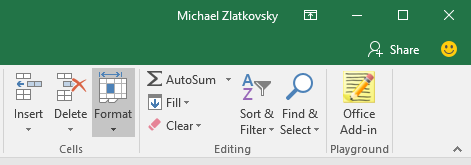

API Explorer
You can use this website from a web browser to look through Office Add-in code samples or to view shared snippets. However, to run the code, you will need to do so from within an Office application (Excel, Word, etc.), and you will need to have acquired the playground Add-in.
You can acquire the add-in in two ways:
- Search for the "API Explorer" add-in in the Office Store website.
- Insert the add-in straight from within an Office application, by choosing the Insert tab in the Ribbon, followed by the Store button in the Add-ins group.

Using the Add-in
Having acquired the Add-in, choose the My Add-ins button (also under the Insert tab in the ribbon), and select the add-in from the dialog that appears.
From there on out, on newer builds of Office, you should see the add-in appear in your Home tab. Otherwise, continue to insert it from Insert==>My Add-ins
We hope you enjoy your playground experience, and thanks for joining us!